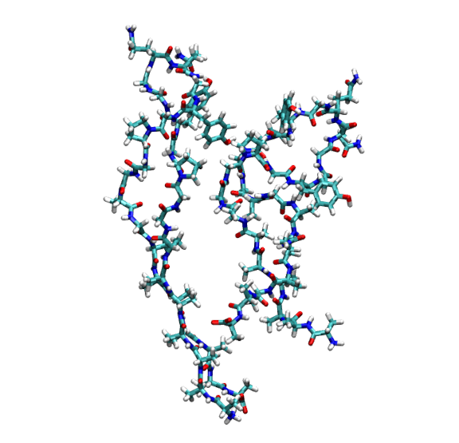
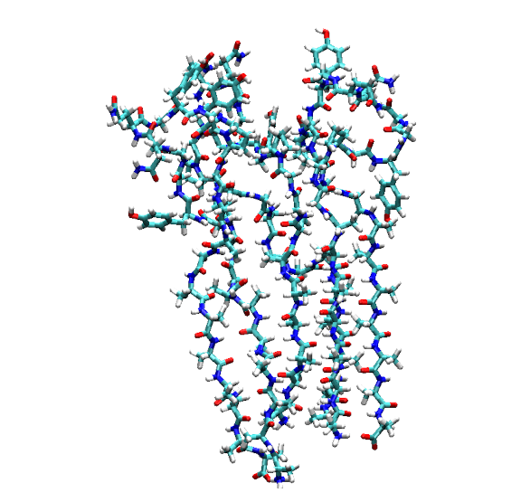

Tutorial: Analyzing $pi$-$pi$ Stacking in Proteins with RSA
This tutorial illustrates how to use the Ring Stacking Analysis (RSA) tool within the pysoftk library to identify and analyze $pi$-$pi$ stacking interactions in protein systems.
Theoretical Background
In protein structures, $pi$-$pi$ stacking commonly occurs between the aromatic rings of specific amino acid side chains (e.g., Phenylalanine, Tyrosine, and Tryptophan). These non-covalent interactions are critical for protein folding, stability, and protein-protein interactions. The RSA tool identifies these events across periodic boundaries based on two geometric criteria:
Distance Cutoff ($d$): The minimum distance between the centers of mass of any two aromatic rings.
Angle Cutoff ($theta$): The angle between the normal vectors of the two ring planes.
Preparation
Before starting any analysis, load the necessary modules and define your file paths.
import os
import numpy as np
import pandas as pd
import MDAnalysis as mda
from pysoftk.pol_analysis.ring_ring import RSA
# 1. SETUP AND PATHS
os.makedirs('data', exist_ok=True)
network_pdb_dir = 'data/network_pdbs'
os.makedirs(network_pdb_dir, exist_ok=True)
original_topology = 'data/protein_rsa_noedit.pdb'
trajectory = 'data/trajectory_rsa_protein.xtc'
edited_topology = 'data/trajectory_resids.pdb'
results_file = 'data/rsa_prot_tutorial.parquet'
Step 1: Editing the Protein Structure File
Note
Why is this necessary? The PySoftK RSA tool identifies distinct macromolecules by their MDAnalysis resid. In a standard protein PDB, the resid denotes individual amino acids (e.g., Res 1, Res 2) and resets for each chain, leading to overlapping IDs across different proteins.
To use the RSA tool correctly, all atoms of the same protein must share a single, unique ``resid``, and this ID must be different from every other protein in the system.
The following code dynamically iterates through the distinct chains (segments) in your system and assigns a single, unique resid to each entire protein.
print(f"--- 1. Processing Initial Topology: {original_topology} ---")
u = mda.Universe(original_topology, trajectory)
# Extract all protein atoms and their positions
proteins = u.select_atoms('protein')
protein_pos = proteins.positions
proteins.positions = protein_pos
# Assign a unique resid to each protein chain (segid)
segids = ['A', 'B', 'C', 'D', 'E', 'F', 'G', 'H', 'I', 'J']
new_resids = []
for i, seg in enumerate(segids, start=1):
protein_seg = u.select_atoms(f'segid {seg}')
seg_len = len(np.unique(protein_seg.resids))
new_resids.extend([i] * seg_len)
print(f"Total new resids generated: {len(new_resids)}")
print(f"Total protein atoms: {len(proteins)}")
# Overwrite the topology's resids with our new unique identifiers
proteins.residues.resids = new_resids
# Save the properly formatted structure for the RSA tool
with mda.Writer(edited_topology, proteins.n_atoms) as W:
W.write(proteins)
print(f"Edited topology saved to: {edited_topology}\n")
--- 1. Processing Initial Topology: data/protein_rsa_noedit.pdb ---
Total new resids generated: 310
Total protein atoms: 3270
Edited topology saved to: data/trajectory_resids.pdb
Step 2: Running the Stacking Analysis
With the newly formatted structure file, we can run the RSA tool. We will initialize the RSA calculator using the edited_topology.
print("--- 2. Running Stacking Analysis ---")
# Calculation parameters
ang_c = 30
dist_c = 5
start, stop, step = 0, 20, 2
# Initialize RSA with the NEW edited topology
rsa_calc = RSA(edited_topology, trajectory)
# Run the highly optimized calculation
# write_pdb=False is used because we will generate network PDBs later
rsa_calc.stacking_analysis(dist_c, ang_c, start, stop, step, results_file, write_pdb=False)
print("Stacking analysis complete.\n")
--- 2. Running Stacking Analysis ---
Ring Stacking analysis has started...
Trajectory Progress: 100%|██████████| 10/10 [00:00<00:00, 14.29it/s]
Function stacking_analysis Took 4.3362 seconds
Stacking analysis complete.
Step 3: Exploring the Results
The output is stored in a Pandas DataFrame and saved as a Parquet file. Because we are analyzing entire macromolecules, we can safely drop the redundant atom_index column to clean up our workspace. The remaining pol_resid column contains pairs of our newly assigned Protein IDs that are participating in a stacking interaction.
print("--- 3. Analyzing Output Data ---")
# Load the DataFrame
df = pd.read_parquet(results_file)
# CLEANUP: Drop the 'atom_index' column since the new RSA tool
# optimizes by using 'pol_resid' exclusively.
if 'atom_index' in df.columns:
df = df.drop(columns=['atom_index'])
print("Cleaned DataFrame Head:")
print(df.head())
print("\nExample of interacting protein pairs in the first recorded stack:")
print(df['pol_resid'].iloc[0])
--- 3. Analyzing Output Data ---
Cleaned DataFrame Head:
pol_resid
0 [[3, 4], [7, 8], [8, 9]]
1 [[3, 4], [1, 3], [1, 2], [4, 6], [6, 10], [1, ...
2 [[1, 2], [3, 4], [4, 6], [3, 5], [8, 9], [7, 8]]
3 [[1, 2], [3, 4], [4, 10], [4, 6], [7, 8]]
4 [[1, 2], [3, 4], [3, 5], [4, 6], [1, 3], [8, 9...
Example of interacting protein pairs in the first recorded stack:
[array([3, 4]) array([7, 8]) array([8, 9])]
Step 4: Network Analysis & PDB Generation
One of the most powerful features of the RSA tool is the ability to extract Connected Networks. A graph theory algorithm evaluates the pairs to identify continuous clusters of proteins interconnected through $pi$-$pi$ stacking.
The code block below demonstrates how to extract these networks and automatically save each complete, isolated macro-structure as a new .pdb file for visualization.
print("\n--- 4. Extracting Connected Protein Networks ---")
# Extract the network groupings
sev_ring = rsa_calc.find_several_rings_stacked(results_file)
# Grab the universe from our RSA calculator and set it to the first frame
u_rsa = rsa_calc.get_mda_universe()
u_rsa.trajectory[0]
print("Connected Networks (Residue IDs of stacked proteins):")
if sev_ring and len(sev_ring) > 0:
for i, network in enumerate(sev_ring[0], start=1):
print(f"\n Cluster {i} members: {network}")
# Convert the set of resids into an MDAnalysis selection string
resid_str = " ".join(map(str, network))
cluster_selection = u_rsa.select_atoms(f'resid {resid_str}')
# Define the output path and write the PDB
pdb_filename = os.path.join(network_pdb_dir, f"network_cluster_{i}.pdb")
with mda.Writer(pdb_filename, cluster_selection.n_atoms) as W:
W.write(cluster_selection)
print(f" -> Saved structure to: {pdb_filename}")
else:
print(" No networks found.")
print("\nWorkflow complete!")
--- 4. Extracting Connected Protein Networks ---
Connected Networks (Residue IDs of stacked proteins):
Cluster 1 members: {3, 4}
-> Saved structure to: data/network_pdbs/network_cluster_1.pdb
Cluster 2 members: {8, 9, 7}
-> Saved structure to: data/network_pdbs/network_cluster_2.pdb
Workflow complete!
Connectivity Visualization
The generated .pdb files allow you to easily render and study the complete connectivity paths inside your simulation box. You can open these files in PyMOL, VMD, or your preferred visualization software.

Rendering of the first connected network (Cluster 1, containing Proteins 3 and 4) extracted from the simulation.

Rendering of the second connected network (Cluster 2, containing Proteins 7, 8, and 9) extracted from the simulation.